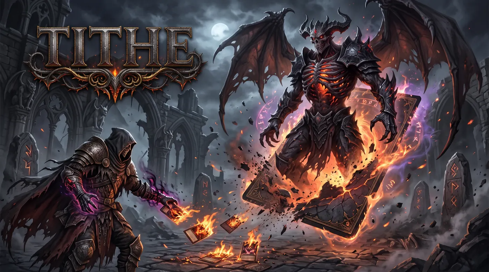

Credits. Music from Battle for Wesnoth (wesnoth.org, GPL v2+), Flare by Brandon Morris & remaxim (flarerpg.org, CC BY-SA 3.0) and 0 A.D. by Wildfire Games (CC BY-SA 3.0). Sound effects from Battle for Wesnoth (GPL v2+), Kenney (kenney.nl, CC0), 0 A.D. and Flare (CC BY-SA 3.0), Minetest Game and SuperTux (CC BY-SA / CC BY), PySolFC, KDE kpat and GNOME AisleRiot (GPL). Board textures from 0 A.D. by Wildfire Games (CC BY-SA 3.0). Character voices and battle sound effects generated with ElevenLabs (elevenlabs.io); story narration with Kokoro TTS (Apache 2.0). Full list: CREDITS.md.
Win by taking the enemy from 20 life to 0, or by leaving them nothing to draw.
Pay a card's cost by burning that many cards off the top of your deck. A creature can also be paid by tributing your own creatures: each one covers its own printed cost. Spells can only be paid by burning.
Lanes. Five lanes per side. Creatures attack straight across their lane. An empty lane opposite means a direct hit on the enemy's life.
Position. Summon in attack or defense. Creatures can't attack the turn they are summoned. Attack vs attack: higher ATK wins, the loser is destroyed and its owner takes the difference as damage. A tie destroys both. Attack vs defense: ATK over DEF destroys the defender, but the defending player takes no damage (only Pierce gets past). ATK under DEF bounces off: the attacking player takes the difference as damage. Defenders can't attack. You may switch position once per turn, not on the turn summoned and not after attacking.
Light & Dark. Penitent Coven cards are Light or Dark. A bonus marked With Light or With Dark is active while you control a creature of that element, so keep one of each on the field.
Phases. Each turn runs Draw → Main 1 → Battle → Main 2 → End. Draw is automatic: you draw a card and start-of-turn effects fire. In the Main Phases you can summon, set, play spells, switch positions and use grave effects. In the Battle Phase you attack, and only ⚡ Quick spells can be played. Main 2 lets you follow up after combat. In the End Phase, "this turn" bonuses wear off.
Playing cards. Tap a card in your hand to see your options. Summon creatures in Attack or Defense Mode. Activate spells, which resolve in an open spell slot, or set them face-down. You can flip a set spell face-up any time during your turn, in any phase, even the turn you set it. A set ⚡ Quick spell has to wait until your next turn. A face-down ⚡ Quick spell also lets you respond on your opponent's turn: when they summon or attack, the game asks if you want to activate it.
Field Spells. Each player has one Field Zone, next to their Hand counter. A Field Spell changes your whole side of the board and stays until it is destroyed or replaced. Playing a new one sends the old one to your grave. Dispel can destroy an enemy Field Spell.
Card abilities. ✦ Activated: tap the creature (or your Field Zone) in a Main Phase and press Effect. Some can be used once per turn, others again and again for a cost. ⊘ Negate: some negators cancel the first spell or effect your opponent activates each turn on their own. Others let you choose: when the opponent activates something, you get a prompt to negate it or let it resolve. ↯ Reaction: triggers when a spell or effect is activated, either once per turn or every time. A lit badge on a creature means its ability is still ready this turn.
Clockwork Arsenal. Wind-Up creatures (⚙) gain a counter at the start of your turn, or two if they're in defense. Each counter gives +1 ATK. Unleash abilities and Release Valve spend counters as damage.
Relic Hunters. The five Relics (Gate Keystone, Sun Lens, Moon Dial, Star Chart, Void Key) are pieces of the Astral Gate. If all five are face-up in your spell zones at once, the Gate opens and you win.
Unbreakable creatures can't be destroyed by battle (damage to life still happens). Immune creatures are unaffected by your opponent's spells, traps and effects: they can't be targeted, damaged, destroyed, bounced or weakened by them.
Stonehold. Any attack that fails against a higher DEF hurts the attacker's owner. Rebound: when an enemy creature attacks a Rebound creature in defense and both survive the battle, the attacker is bounced back to its owner's hand. Provoke effects force enemy creatures in attack position to attack the defense creature across from them right now. Lane-shift effects drag enemy creatures across from your strongest wall.
Shared Agony. Whenever the Shared Agony player pays a cost, their opponent pays half of it, rounded down. Burn 4 or tribute for a 4-cost card and the opponent burns 2. Pay 4 life and they lose 2. Activated abilities with a burn cost count too.
Cerberus. Ember Court's three-headed Extra Deck hound bites up to three times a turn: once into the lane in front and once into each diagonal lane. It needs a creature to bite, so it can't attack directly. When it arrives it fetches Gates of Hades: your Ember creatures get +2 ATK, your opponent takes 1 burn at the end of each of their turns, and once per turn you can summon a creature from your grave by paying its cost.
Extra Deck. Every deck has an Extra Deck of up to 8 monsters (the blue counter on its bar), including generic ones like Tithe Colossus and Twin Sovereign. They're never drawn. In a Main Phase, open it and summon one whose condition you meet, usually by tributing specific creatures; you pick the lane. You can make as many Extra Deck summons a turn as you can pay for, and they return to the Extra Deck when they leave the field. For Crown & Wyrm: After Skybound Vow battles, tribute it for Seraphine, Berserk Dragon Goddess (12/5), who can attack right away. Or, in a Main Phase, tribute a Vow that's been on the field since your turn began for Aldric, the Berserk God King (10/8). Extra Deck monsters go back to the Extra Deck when they leave the field.
Crown & Wyrm. When Prince Aldric is on your field and Seraphine, Skyborn Dragon has been there since the start of your turn, press ♛ Unite to summon Skybound Vow from your hand, deck or grave. It attacks twice. After it attacks, press ⇋ Split to bring back Aldric and Seraphine ready to attack. Unite and Split are effects, so they can be negated.
Spell slots. Each side has five spell slots behind its creature lanes. Lane spells are set in a slot and stay there, affecting the lane they sit in. Other spells resolve and go to the grave.
Traps. Traps are set face-down in a spell slot. Your opponent can't see them. They spring on their own when their condition is met, and some only watch their own lane.
Keywords. Pierce pushes leftover ATK through a destroyed defender, the only way past defense. Ward can't be targeted by enemy spells or effects. Drain heals you for the damage it deals to the enemy. A silenced creature loses all of its abilities.
Decks. Decks are 60 cards with at most 3 copies of any card. Staples are neutral cards that fit any deck.
The grave. Tap either Discard counter to open and search that pile. Some cards trigger when milled (burned or milled off the deck). Others have a grave effect you can activate from your discard on your turn, once per turn, by banishing that card.